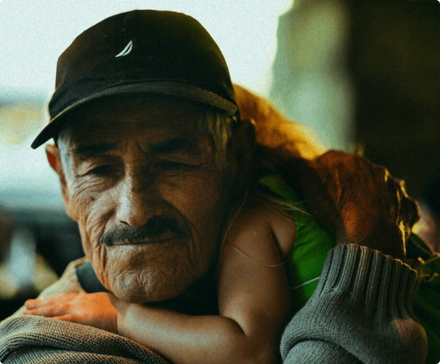
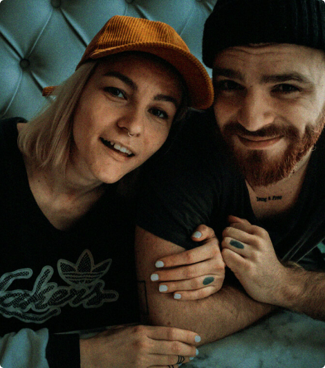

<section class="approach">

  <div class="approach__top">
<div class="container grid">
<div class="approach__left">
  <h2 class="approach__title">Our work in action. We are a non-profit that partners with state criminal justice agencies to advance their use of data and red.</h2>
  <p class="approach__description">Every person who safely transitions back to the community ia a little toward a better society</p>
  <buton class="btn-reset btn approach__btn">Our approach</buton>
  </div>
  <div class="approach__right">
    
    
  </div>
  </div>
  </div>
  <div class="approach__bottom">
<div class="container">

  <ul class="list-reset approach__list grid">
    <li class="approach__item">
      <a href="" class="approach__link">The New York Times</a>
    </li>
    <li class="approach__item">
      <a href="" class="approach__link">StateScoop</a>
    </li>
    <li class="approach__item">
      <a href="" class="approach__link">Time</a>
    </li>
    <li class="approach__item">
      <a href="" class="approach__link">WOG</a>
    </li>
    <li class="approach__item">
      <a href="" class="approach__link">D.News</a>
    </li>


  </ul>


  </div>
</div>


</section>
